團隊
實驗室的研究橫跨游離機制、儀器開發與分類應用，不同專長的同學都能找到位置。
實驗室主持人

I-Chung Lu 盧臆中
副教授 · 化學系，國立中興大學
Dr. I-Chung Lu is an Associate Professor in the Department of Chemistry, National Chung Hsing University (NCHU), Taichung, Taiwan. He received his B.S. and Ph.D. in chemistry from National Tsing Hua University, and carried out postdoctoral research at the Institute of Atomic and Molecular Sciences, Academia Sinica, and at Wayne State University, USA. He began his independent career at Providence University before joining NCHU.
His research bridges fundamental physical chemistry with analytical applications, centred on mass spectrometry. Building on his mechanistic studies of MALDI ionization, his group now couples mass spectrometric analysis of carbohydrates with AI-based classification models to develop diagnostic and rapid-screening tools. In parallel, he uses customized MS inlet systems to capture reactive intermediates and transient species, revealing the kinetics and mechanisms of transition-metal-catalyzed reactions and electrochemical water oxidation. His work demonstrates how advanced analytical science serves as an enabling technology that accelerates chemical discovery.
學歷
- Ph.D. in ChemistryNational Tsing Hua University, Taiwan · 2000–2007
- B.S. in ChemistryNational Tsing Hua University, Taiwan · 1993–1997
經歷
- Associate ProfessorDepartment of Chemistry, National Chung Hsing University · 2024–present
- Assistant ProfessorDepartment of Chemistry, National Chung Hsing University · 2018–2024
- Assistant ProfessorDepartment of Applied Chemistry, Providence University · 2017–2018
- Postdoctoral FellowDepartment of Chemistry, Wayne State University, USA · 2015–2016
- Postdoctoral FellowInstitute of Atomic and Molecular Sciences, Academia Sinica, Taiwan · 2012–2015
- R&D Chief EngineerAnalytical Instrument Division, CVC Technologies, Inc. · 2011–2012
- Postdoctoral FellowGenomics Research Center, Academia Sinica, Taiwan · 2008–2011
獲獎
- 國立中興大學優聘教師（115 學年度）2026
- 國立中興大學特優導師（112 學年度）2024
- 國立中興大學教學特優獎（110 學年度）2021
研究助理
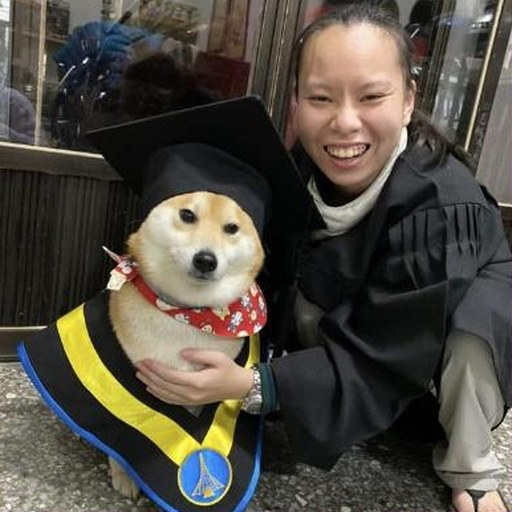
碩士班學生
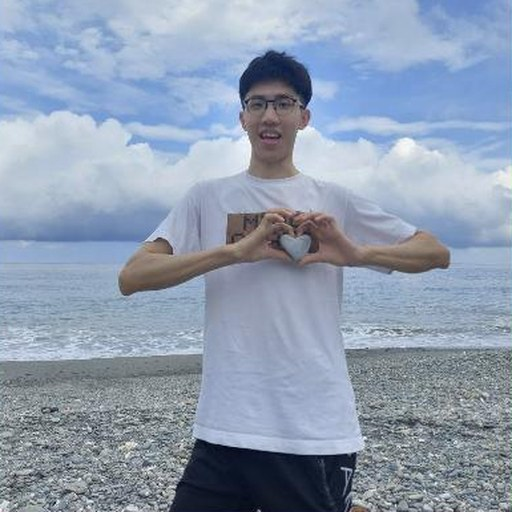
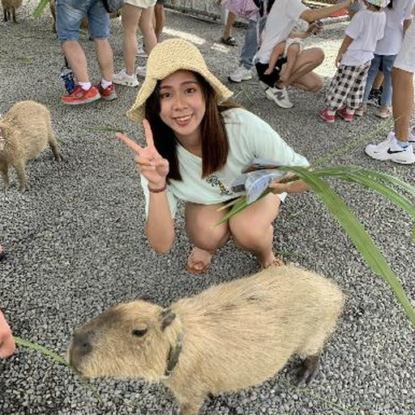
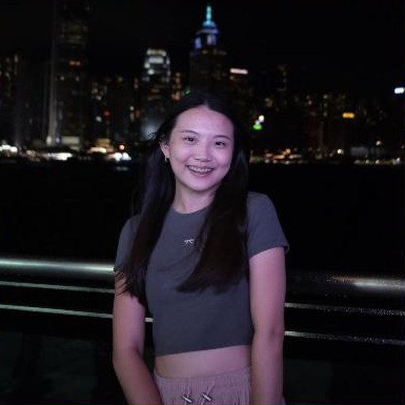
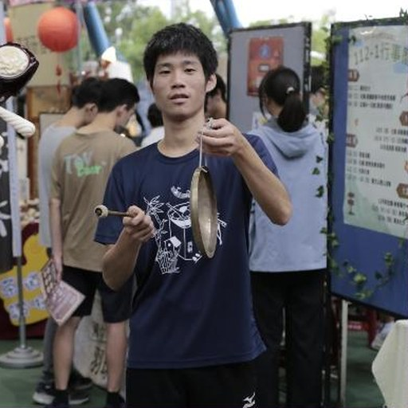
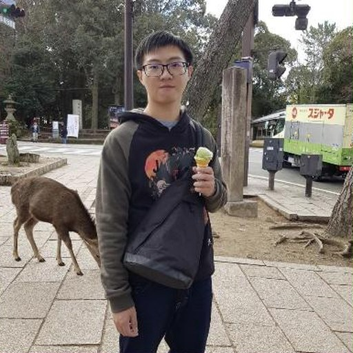
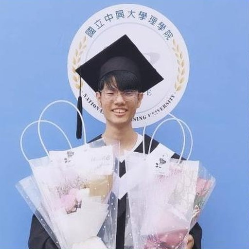
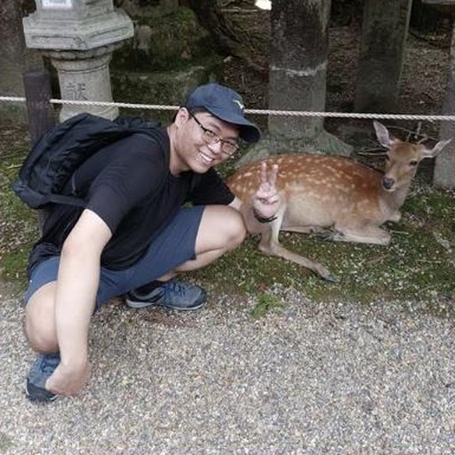
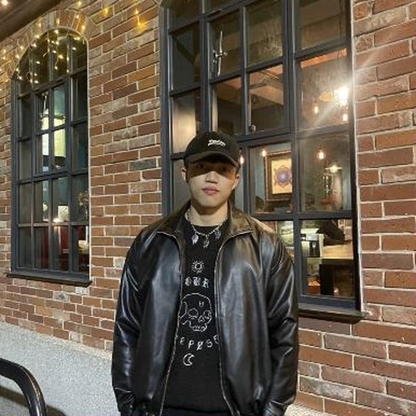
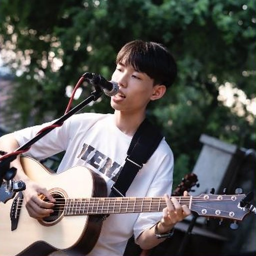
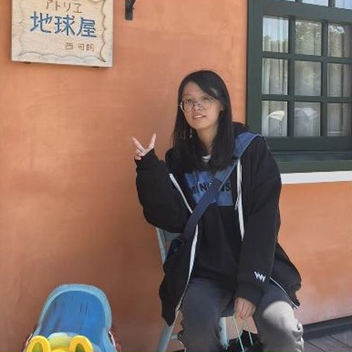
大學部學生
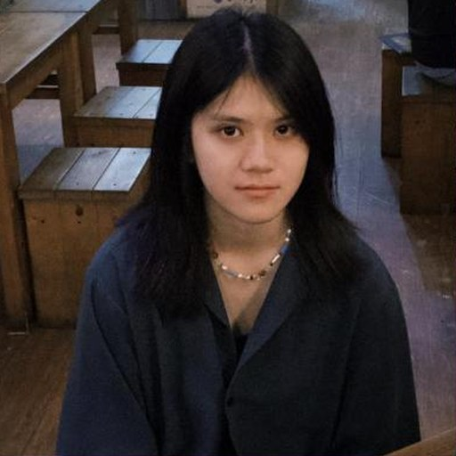
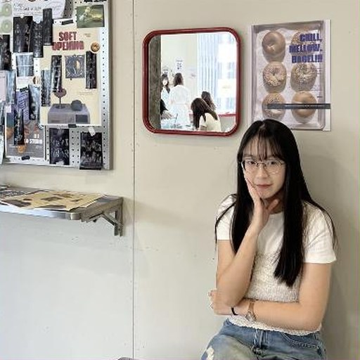
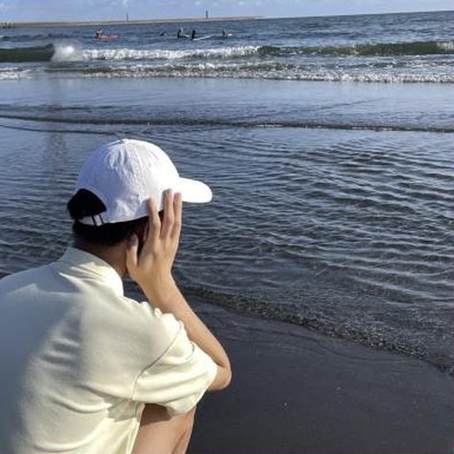
歷屆成員